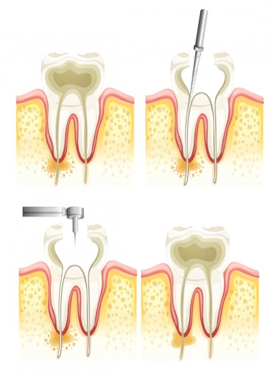
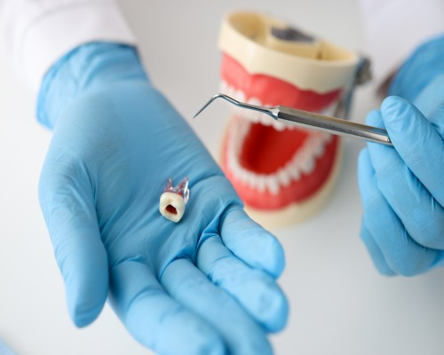

English
EnglishKanal Tedavisi - İstanbul
Atlantik Diş Kliniği İstanbul
Kanal tedavisi - Endodonti - Fiyatları - İstanbul
Kanal tedavisi nedir?
Ağzımızdaki dişeti sınırının üzerindeki tabaka olan mine (diş minesi) ve dentin’in altında bulunan diş siniri dediğimiz uzantıların iltihaplanmasını önlemek ve iyileştirmek amacıyla hastalanmış dişleri kaybetmemek için uygulanan, dişin canlı kısmı olan yumuşak damar-sinir uzantısının yerinden alınması tedavisidir. Bu tedavi endodonti uzmanlarınca yapılmaktadır. Eskiden diş sinirlerindeki (pulpa) iltihaplanma sadece diş çekimi tedavisi ile çözüme kavuşturulurken günümüzde diş hekimleri tarafından yapılan kanal tedavisi yöntemi ile dişler çekilmeden kullanım ömrünün artması sağlanmaktadır. Aynı zamanda estetik bir görüntü veren diş kanal tedavisinde çürükler ve kanallar temizlenir, sızdırmayı önlemek için kanal dolgu işlemi yapılır.
Endodonti nedir?
Dişlerimizin yapısı görünen bölge ve kemik içinde kalan görünmeyen bölge olarak iki kısımdır. Görünen bölgeye kuron ismi verilirken, görünmeyen bölgeye ise kök adı verilir. Ayrıca dişlerimizin en dış tabakası mine tabakası olup onun altında da dentin olarak isimlendirilen bir bölge vardır. Mine ve dentin adı verilen dişimizin dış tabakalarının alt kısmında yumuşak bağ dokusu şeklindeki diş siniri olarak bilinen pulpa bulunmaktadır. Pulpa dişi besleyen ve onu geliştiren yapıdır. Diş yeterli gelişimi sağladığında, dişin siniri bir uyarıcı gibi ağrıyı hissettirerek dişin hasarlandığını ya da mikrop kaptığını bildirir. İşte tam bu noktada endodonti, diş sinirine kadar inmiş rahatsızlıklarda inceleme ve değerlendirme yaparak hastalıklı dişin kurtarılması için tedavi uygulayan diş hekimliği dalıdır. Bu tedavi Endodontist adı verilen uzman diş hekimleri tarafından yapılmaktadır.
Kanal tedavisi nasıl yapılır?
Başta da belirttiğimiz üzere kanal tedavisi uzman diş hekimi olan endodontist tarafından yapılır. Dişteki hasara göre tedavinin ne kadar süreceği belirlenir.
- Diş kanal tedavisi işlemine başlarken tedavi edilecek bölge lokal olarak uyuşturulur. Bu şekilde hasta işlem sırasında ağrı ve acı duymaz. Diş çürüğünün olması durumunda çürük temizlenerek, diş kuron tabakasından açılıp pulpaya ulaşılır.
- Kanal uzunluğunu görmek ve yaygın bir enfeksiyon var mı tespit etmek için radyografi (röntgen) çekilir.
- Diş kökü temizlenir. Eğer kemikte çürük ve diş kırığı mevcut ise onun da temizliği yapılır.
- Kanal tedavisi için çeşitli el aletleri ve döner aletler kullanarak kanal eğeleme yöntemi ile kanal genişletmesi yapılır. Tedaviye uygun biçimde diş kökü kanallarının şekillendirmesi gerçekleştirilir. .
- Tedavi edilen bölgedeki gereksiz pulpa, zarar görmüş diş siniri ve enfeksiyon kalıntıları temizlenir. Belirli aralıklarla su ya da hipoklorit kullanılarak dişin içi temizlenebilir. Bu temizlik diş kanal tedavisi için çok önemlidir.
- Ölü diş varsa ve diş kökünün uç kısmında iltihap oluşmuşsa bakterilerin iyileşmesi için kökteki kanallara ilaç uygulaması yapılabilir. İlacın etkili olabilmesi için kanalın içinde 5-7 gün kadar durması sağlanmalıdır. Beklenilmesi gereken bu zaman aralığında tedavi gören dişe, geçici bir dolgu maddesi konulabilir.
- Diş kökünde aşırı bir iltihap vakası var ise diş hekimi ağızdan alınacak bir ilaç tedavisi tavsiye edebilir.
- Son olarak daha önce yapılmış olan geçici dolgu çıkarılır. Kalıcı dolgu ile hem pulpa boşluğu hem kanal kapatılır. Dişe estetik bir gönüm sağlamak için üzerine kuron kaplanabilir.
Kanal tedavisi hangi durumlarda yapılır?
Her ne kadar kanal tedavisi gerektiren birçok sebep sayılabilirse de çürük diş tedavisinde kanal tedavisi tercih edilecek son tedavi şekli olduğundan bu tedaviye ihtiyaç olup olmadığına endodonti uzmanı hekim tarafından karar verilmesi gerekir. Ne tür hastalara kanal tedavisi yapılır? Kanal tedavisi hangi aşamada yapılmalıdır? sorularının genel olarak cevapları aşağıdaki sıralamada mevcuttur.
- Dişte hiçbir sebep yokken kendiliğinden oluşan ağrılar başlamışsa.
- Dişin sinir bölgesine etki eden çürük varsa.
- Darbe benzeri dış etkenler nedeniyle ortaya çıkan travma veya çürük akabinde pulpa (diş siniri, diş özü) ölmüşse veya hasarlanmışsa.
- Travma nedeniyle diş canlılığını yitirmişse.
- Diş sinirine zarar vermeye başlayan bir çürük nedeniyle soğuğa karşı duyarlılık oluşmuş ve arkasından ağrı ve sızı başlamışsa.
- Dolgu tedavisinin başarısız olması nedeniyle çürüme sürüyor, ağrı ve duyarlılık devam ediyorsa.
Kanal tedavisi öncesi yapılması gerekenler
Endodonti uzmanı tarafından yapılacak olan kanal tedavisi işlemleri öncesi ve işlem seansları esnasında hastalar tarafından dikkat edilmesi gereken birçok nokta bulunmaktadır. Genel olarak;
- Sert kabuklu yiyecekler yenilmemesi,
- Dişimize yapışma riski bulunan kuru meyve, karamel, lokum gibi yiyecekler tüketilmemesi,
- Sakız çiğnenmemesi,
- Sıvı tüketirken aşırı soğuk ve sıcak içeceklerden kaçınılması, olarak sayılabilir. Fakat bu sayılanlardan hariç hekiminiz tarafından tavsiye edilen hususlara özen gösterilmesi başarısız kanal tedavisi riskinden bizleri uzaklaştıracaktır.
Kanal tedavisi sonrası yapılması gerekenler
Kanal tedavisi sonrası nelere dikkat edilmelidir, hastaların kafasında merak uyandıran bir konu olarak durmaktadır. Kanal tedavisi sonrası hastalar için çok daha fazla önem arz etmektedir. Kanal tedavisi sonrası genelde ağrı, şişlik, dişin üzerine baskı uygulandığında oluşan acı, dişteki renk bozukluğu, dişte kırılma, geçici bir süre için yapılan dolgunun yerinden çıkması ve dişin yeniden çürümesi gibi şikayetler görülebilir. Diş kanal tedavisi sonrası diş hekimleri tarafından önerilen ve hastalar tarafından dikkat edilmesi gereken hususlar şunlardır:
- Kanal tedavisi ardından geçici olarak, şiddetli olmayan ağrı ve dişte aşırı duyarlılık olabilir. Tedavinin uygulandığı bölgenin birkaç gün kullanılmaması bu rahatsızlıkları hafifletecektir. Diş enfeksiyonu ya da diş apsesi oluşumunda ağrının şiddeti artabilir. Ayrıca bu gibi durumlarda diş hekiminizin önerdiği ağrı kesici de kullanılabilir.
- Gün içinde 2 veya 3 defa tuzlu su ile gargara yapmak ağrının şiddetini azaltabilir.
- Kanal tedavisi sonrasında 2 saat kadar bir süre soğuk ya da sıcak yiyecek ve içecekler tüketilmemelidir.
- Dişler, sabah kahvaltı ardından ve akşam uykuya geçmeden önce olacak şekilde iki kez fırça ile temizlenmelidir. Ayrıca kanal tedavisi sonrasında da dişler diş ipi ile temizlenmeli (İki günde bir defa) ve ağız bakım suyu ile gargara yapılmalıdır.
- Kanal tedavisi sonrası diş bölgesine yapılan dolgu bölgeye yerleşinceye kadar ortalama 2-3 günlük bir sürede dolguya yapışma riski bulunan kuru meyve, sakız, lokum ve karamel gibi ürünlerde uzak durulmalıdır. Dolguya ve dişe zarar verecek sert kabuklu yiyeceklerin tüketiminden de kaçınılmalıdır.
- Kanal tedavisi sonrası yemek yeme şeklimize önem verilmeli, çenemizin hem sağ hem sol tarafı kullanılmalıdır.
- Sigara ve alkol kullanımı dişte apseye sebebiyet verdiğinden en az 1 gün kadar kullanılmamalıdır. Sigara ve alkol kullanımı iyileşmeyi de geciktirmektedir.
- Kanal tedavisi sonrasında 6 aylık düzenli kontroller şeklinde diş hekimine gidilmesi iyileşme ve uzun süreli kullanım için iyi olacaktır.
- Kanal tedavisi sonrası dolgu düşmesi ile karşılaşılırsa vakit kaybetmeden diş hekimine başvurulmalıdır.
Kanal tedavisi ne kadar sürer?
Tedavi yapılacak dişin hangi durumda olduğa göre seans adedi de farklılaşmaktadır. Kanal tedavisi 30 dakikada da bitebilir, birkaç ay da sürebilir. Dişin tek veya çok köklü olması da seans sayısına etki eder. Tek köklü diş komplike değilse tek seansta bitebilirken birden fazla kökü olan bir dişin tedavisi 2-3 seans sürebilir. Diş bölgesinde mevcut olan zorlu bir enfeksiyon durumunda bu enfeksiyonun tedavisi için ilaç tedavisi ve pansuman uygulanacağından kanal tedavisi süresi de uzamaktadır.
Kanal tedavisi-Endodonti sık sorulan sorular
Diş kanal tedavisi fiyat tarifesi konusunda net bir şey söylenebilmesi mümkün değildir. Bazı sanal ortamlarda deklare edilen fiyatlar da kesinlik konusunda hastaları yanıltabilmektedir. Kanal tedavisi hastanın durumuna göre değişiklik göstereceğinden şahsa özel bir tedavi şekli olup bu sebeple de kanal tedavi fiyatları da farklı farklıdır. Ancak diş hekimi tarafından yapılacak ön muayene sonrasında net fiyat verilebilir. Kanal tedavi fiyatları belirlenirken baz alınan Türk Diş Hekimleri Birliği’nin yayınlamış olduğu tarifede kanal tedavisi fiyat 2021- kanal tedavisi fiyat 2022 şeklinde bağlayıcılığı olmayan taban fiyat miktarları bulunmaktadır. Verilen hizmetin ve kullanılan malzemenin kalitesi de fiyatın belirlenmesinde önemli bir ayrıntıdır. Diş kanal tedavisi fiyatları belirlenirken; dişteki çürüğün ağır olup olmaması, bu nedenle seans sayısının artmış olması, kanal sayısı ve diş kökü sayılarında farklılıklar olacağından tedavinin hangi dişe yapılacağı (kesici, küçük azı ve büyük azı diş), tedaviyi yapacak endodonti uzmanının tecrübesi, dikkate değer unsurlardır.
Endodonti uzmanı tarafından yapılan başarılı bir tedavi ve sonrasında önerilere uygun ağız bakımı ile kanal tedavisi gören diş yaşam boyu kullanabilecektir. Kanal tedavisi uygulamasında diş siniri veya diş özü olarak da bilinen pulpa yerinden çıkarıldığından diş zayıflamaktadır. Zayıf olan dişte kırılma ve çatlama görülebilir. Bunun önüne geçmek için tedavi edilen diş kullanılırken özenli davranılmalıdır. Sert kabuklu yiyecekler yenirken diş zorlanmamalıdır.
Kanal tedavisi ağrılı bir işlem midir? Kanal tedavisi acıtır mı?